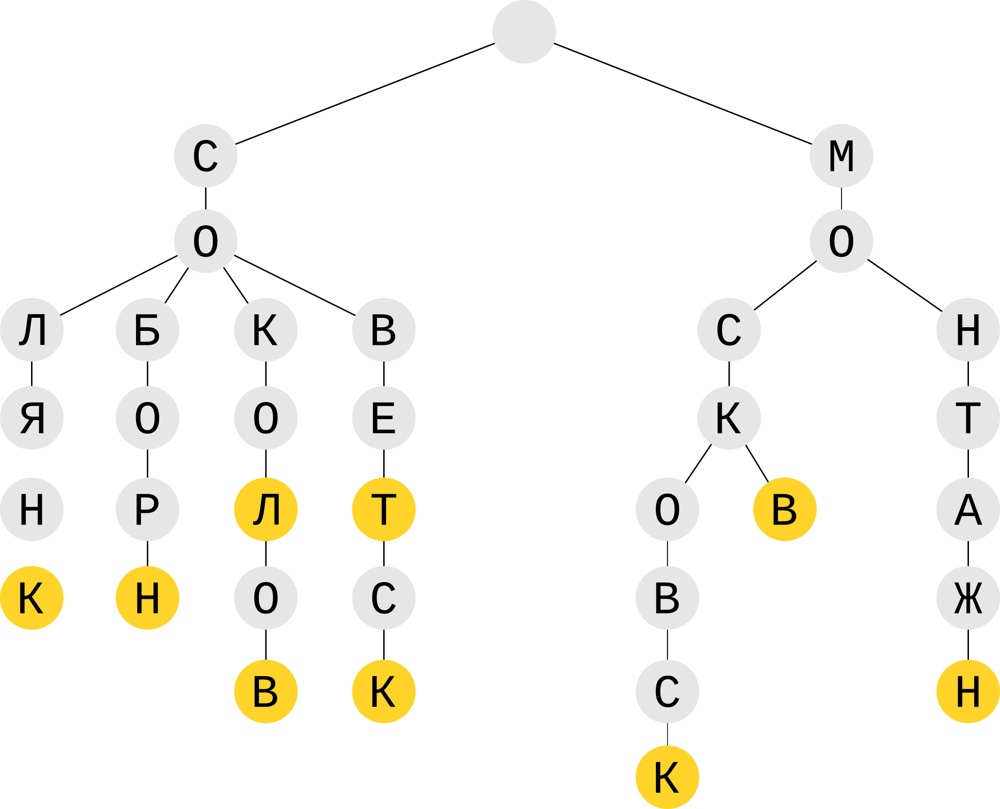
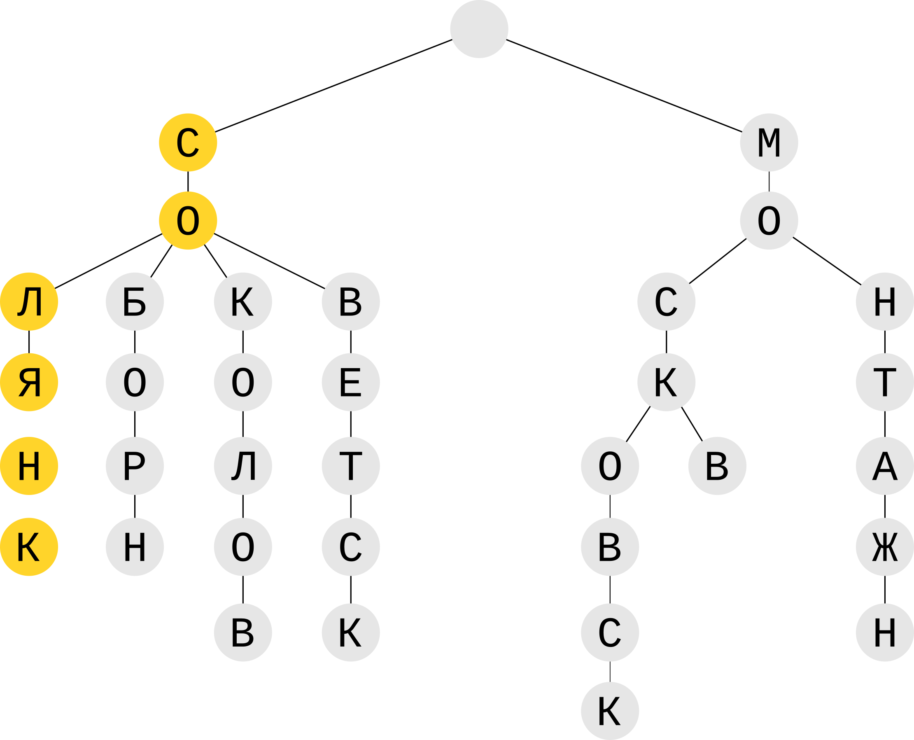
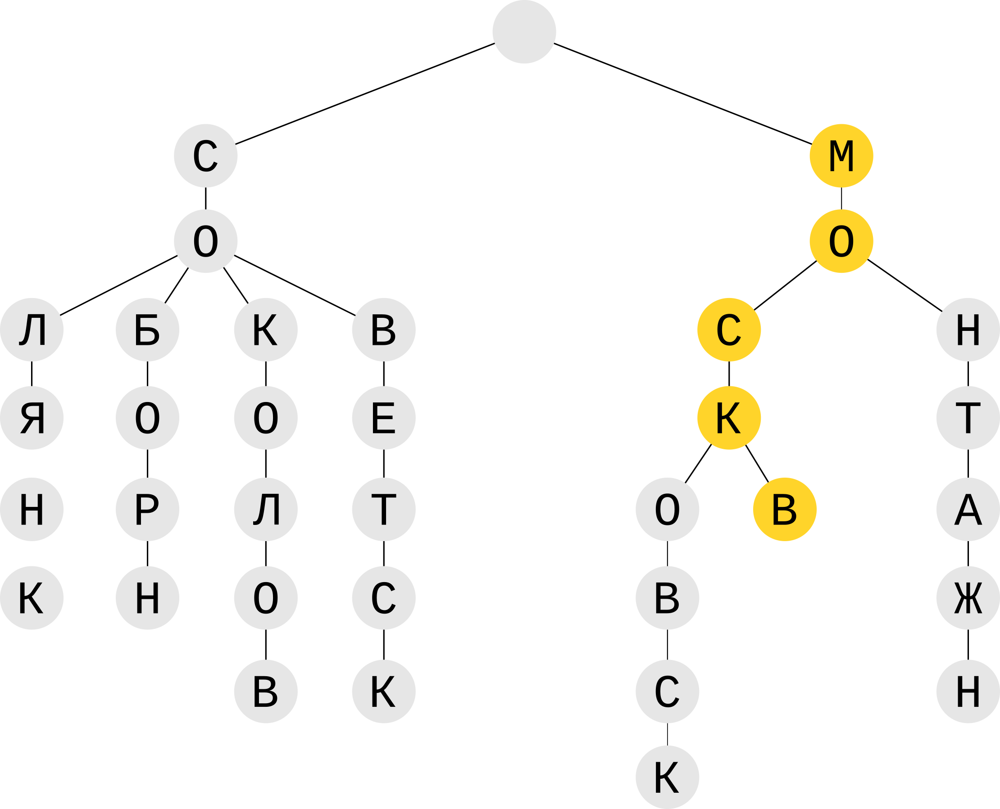
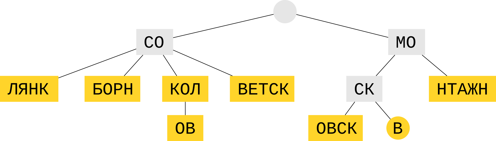

Свой геокодер на PHP
Владимир Лила
Прямой геокодер
Пользователь указывает адрес:
г Ростов-на-Дону ул Города Волос 6
Находим координаты:
47.227341, 39.706110
Обратный геокодер
Пользователь указывает точку:
47.227341, 39.706110
Находим адрес:
г Ростов-на-Дону ул Города Волос 6
Исходные данные
Исходный формат может быть любой. Например, у нас таблица в БД:
| Адрес |
Широта |
Долгота |
| г Ростов-на-Дону ул Города Волос 6 |
47.227341 |
39.706110 |
| г Ростов-на-Дону ул Социалистическая 15 |
47.217733 |
39.701547 |
| г Москва ул Солянка 15 |
55.750819 |
37.642411 |
| ... |
... |
... |
Как же построить поисковый индекс?
1. Нужен уникальный идентификатор адреса
1001 => г Ростов-на-Дону ул Города Волос 6
1002 => г Ростов-на-Дону ул Социалистическая 15
1003 => г Москва ул Солянка 15
Как же построить поисковый индекс?
2. Нужен токенизатор
г Ростов-на-Дону ул Города Волос 6:
['г', 'Ростов-на-Дону', 'ул', 'Города', 'Волос', '6']
г Ростов-на-Дону ул Социалистическая 15:
['г', 'Ростов-на-Дону', 'ул', 'Социалистическая', '15']
г Москва ул Солянка 15:
['г', 'Москва', 'ул', 'Солянка', '15']
Как же построить поисковый индекс?
3. Нужен фильтр
-
Приводим все к одному регистру
Г РОСТОВ-НА-ДОНУ УЛ СОЦИАЛИСТИЧЕСКАЯ 15
-
Убираем стоп-слова: "г", "ул", "пр", "пер"
РОСТОВ-НА-ДОНУ СОЦИАЛИСТИЧЕСКАЯ 15
-
Стемминг
РОСТОВ-НА-ДОН СОЦИАЛИСТИЧЕСК 15
Как же построить поисковый индекс?
4. Получаем фильтрованные токены
г Ростов-на-Дону ул Города Волос 6:
['РОСТОВ-НА-ДОН', 'ГОРОД', 'ВОЛОС', '6']
г Ростов-на-Дону ул Социалистическая 15:
['РОСТОВ-НА-ДОН', 'СОЦИАЛИСТИЧЕСК', '15']
г Москва ул Солянка 15:
['МОСКВ', 'СОЛЯНК', '15']
Как же построить поисковый индекс?
5. Итого имеем пока индекс на "листе бумаги":
'РОСТОВ-НА-ДОН' => [1001, 1002]
'ГОРОД' => [1001]
'ВОЛОС' => [1001]
'6' => [1001]
'СОЦИАЛИСТИЧЕСК' => [1002]
'15' => [1002, 1003]
'МОСКВ' => [1003]
'СОЛЯНК' => [1003]
Как перенести индекс в PHP?
Остановимся пока на Hash-таблице
- Высокая скорость O(1)
- Ассоциативные массивы PHP "из коробки" - это hash-таблицы
Простейший код с индексом в памяти на PHP
$index = [
'РОСТОВ-НА-ДОН' => [1001, 1002],
'ГОРОД' => [1001],
'ВОЛОС' => [1001],
'6' => [1001],
'СОЦИАЛИСТИЧЕСК' => [1002],
'15' => [1002, 1003],
'МОСКВ' => [1003],
'СОЛЯНК' => [1003],
];
Как использовать индекс для поиска?
$counter = [];
$bestId = null;
// $tokens = ['РОСТОВ-НА-ДОН', 'СОЦИАЛИСТИЧЕСК', '15']
$tokens = $tokenizer->getTokens('г Ростов-на-Дону ул Социалистическая 15');
foreach ($tokens as $token) {
$addressIds = $index[$token] ?? [];
foreach ($addressIds as $id) {
$counter[$id] = isset($counter[$id]) ? $counter[$id] + 1 : 1;
if ($bestId === null || $counter[$bestId] < $counter[$id]) {
$bestId = $id;
}
}
}
// $counter = [1001 => 1, 1002 => 3, '1003' => 1]
// $bestId = 1002
echo getAddressById($bestId)->locationString();
Как хранить индекс на диске?
- JSON
- PHP serialize()
- PHP файл
Как шарить между процессами?
- Реляционные БД? 👎
- Колоночные БД? 👎
- Redis? 👎
- Memcached? 👎
- APCu 🔥
Итак, остановились на APCu
- Пишет только в ОЗУ
- Один индекс для всех php-процессов
- Разделяемая память (Shared memory)
- Нет сетевых расходов
- Как итог, самый быстрый
А как же опечатки?
Помогут нам триграммы
- Каждое слово делится на сочетания – триграммы
- При поиске похожей фразы ищутся одинаковые триграммы
- Чем больше равных триграмм, тем больше фраза схожа с исходной
Например, для "Ростов":
__Р
_РО
РОС
ОСТ
СТО
ТОВ
ОВ_
В__
Поиск по фразе "Растов":
__Р
_РА
РАС
АСТ
СТО
ТОВ
ОВ_
В__
Теперь нужен какой-то индекс по триграммам!
Индекс для триграмм
Нужны уникальные идентификаторы токенов
// переулок Соляной спуск
301 => СОЛЯН
// ул Солянка
302 => СОЛЯНК
$index = [
'__С' => [301, 302],
'_СО' => [301, 302],
'СОЛ' => [301, 302],
'ОЛЯ' => [301, 302],
'ЛЯН' => [301, 302],
'ЯН_' => [301],
'Н__' => [301],
'ЯНК' => [302],
'НК_' => [302],
'К__' => [302],
];
Как использовать индекс триграмм для опечаток?
$counter = [];
$bestTokenId = null;
// $trigrams = ['__C', '_СА', 'САЛ', 'АЛЯ', 'ЛЯН', 'ЯН_', 'Н__']
$trigrams = getTrigrams('САЛЯН');
foreach ($trigrams as $trigram) {
// [301, 302], [], [], [], [301, 302], [301], [301]
$tokenIds = $index[$trigram] ?? [];
foreach ($tokenIds as $id) {
$counter[$id] = isset($counter[$id]) ? $counter[$id] + 1 : 1;
if ($bestTokenId === null || $counter[$bestTokenId] < $counter[$id]) {
$bestTokenId = $id;
}
}
}
// $counter = [301 => 4, 302 => 2], $bestTokenId = 301
echo getTokenById($bestTokenId); // СОЛЯН
Как быть с подсказками (suggestions)?
Пользователь начинает ввод "Солян". Хотим предложить варианты:
г Ростов-на-Дону ул Соляника
г Ростов-на-Дону пер Соляной Спуск
г Москва Солянка
г Москва Солянский тупик
г Москва Солянский проезд
Похоже, наши индексы нам не помогут 🤔
Префиксное дерево для подсказок
Дерево для токенов:
СОЛЯНК
СОБОРН
СОКОЛОВ
СОКОЛ
СОВЕТСК
МОСКВ
МОСКОВСК
МОНТАЖН

Префиксное дерево для подсказок
Дерево для токенов:
СОЛЯНК
СОБОРН
СОКОЛОВ
СОКОЛ
СОВЕТСК
МОСКВ
МОСКОВСК
МОНТАЖН

Префиксное дерево для подсказок
Дерево для токенов:
СОЛЯНК
СОБОРН
СОКОЛОВ
СОКОЛ
СОВЕТСК
МОСКВ
МОСКОВСК
МОНТАЖН

Сжатое префиксное дерево

Основная проблема производительности
Слишком популярные токены, например:
В России 110+ млн адресов (2024г)
В Москве 3.5+ млн адресов (2018г)
В России 500+ тыс улиц (2024г)
Для адреса "г Москва ул Солянка 1" пересечений:
3.5 млн + 500 тыс + 500 = ~4млн
Оптимизация
- Для поиска городов отдельный индекс (без улиц и домов)
- Отдельные индексы по улицам для каждого города
- Отдельные индексы по номерам домов для каждой улицы
Самый большой индекс для Москвы - 3500 улиц 😌